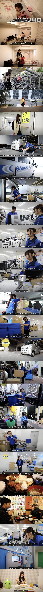

도쿄 일본인 여자 택배원의 하루
댓글
av아닙니다
왜 드리프트 안함?
??? 뭐지 왜 여기서 끝나???
뒤에 뭔가 이상한 스토리 가지고 오라고!!ㅋ
뭐지?? 이게끝은아니지?
구라 ㄴ
쟤네도 겨울엔 눈 ㅈㄴ내리지않나? 겨울에 화물업하는분들 존경함
그거 북해도쪽만 그러고 본토는 추워도 영하3도 이래서 금방 녹을걸
자, 이제 카메라 보고 자기소개 해봐야지?
뭐야 택배 도장 받으면서 현관합체 안함?
마지막 패트병 뭔가 신기하게 생겼네
지금은 단종된 오오이오차 1리터짜리인데 작은건 적고 1.5는 많다고 느끼는 1인가구용으로 판매하다가 판매량 별로안나와서 몇년전에 사라졌음
아니 왜 진짜 다큐를 가져오면 어떻해
배송중에 전남친 집에가고 그런거 아니에요?
왜?
수상할정도로 예쁜
야스~ 호~
이상하다 중요한게 빠진거 같은데
배송 물건 잃어버리고, 고객에게 알몸 도게자하는 거 왜 안나옴?
택배양... 참으로 곱소..
진짜 일본인들 청소하는거에 뭔가 특화되어있는것같기도함
다그렇진않겠지만 적어도 내가 본 도쿄에서는 빌딩경비가 차량유도 하다 할거없으니깐 화단들어가서 쓰레기 줍고 잡초뽑고
작은파출소엔 순경이 유리창 청소하고 거리가 깨끗한이유는 그런것들인것같더라 청소하시는 미화원을 본적없는것같다
얼마나 좋으면 야스호냐
처음 원룸구도가 딱 그건데
야스 호 나갑니다 뿌뿌\
야스 호~~~ 아흐
저 유니폼이 진짜 유니폼이었구나....
실수로 고객님 택배를 떨궜는데 성인용품이었던 장면 ㅇㄷ??
왜 진짜 배송만함?